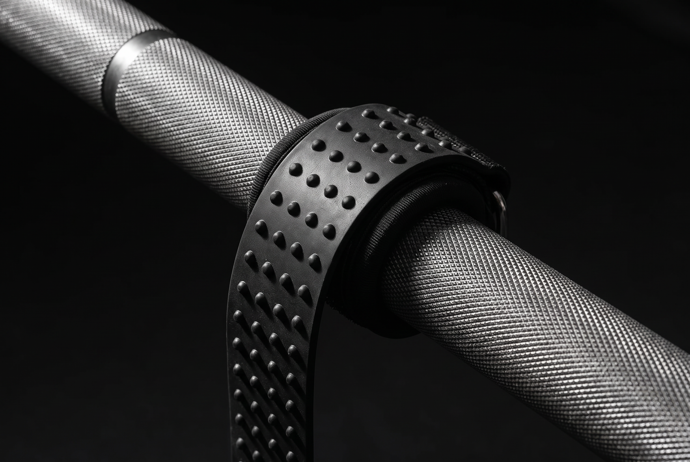
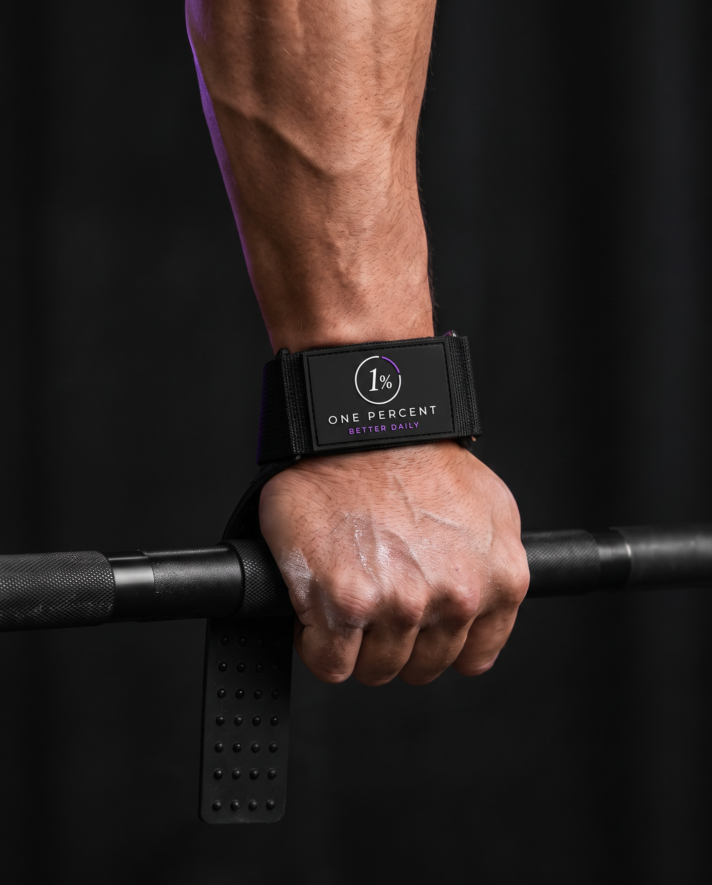

Built to
the last 1%

anti-slip
grip 5mm neoprene
padding Double D-ring
cuff
Strap length 30cm
- Dwg
- 1P-LS-BLK
- Rev
- A
- Scale
- 1:1
- Sold as
- Pair

The dots do the gripping.
Rows of raised silicone run the full 30cm of the strap. They bite into the knurling instead of sliding over it, so the bar stays where you put it on the last rep, not just the first.
Parts list
| Strap | 30cm | Silicone anti-slip, 3.8cm wide |
|---|---|---|
| Padding | 5mm | Neoprene, soft and breathable |
| Cuff | 2× | D-rings, hook and loop closure |
| Fit | 1 | Size, adjusts to most wrists |
| Qty | 2 | Straps, sold as a pair |
On in ten seconds.
- 1Wrap the cuff round your wrist and fasten it snug.
- 2Pass the strap under the bar, dots facing the steel.
- 3Wind it round once, grip over the top, and twist tight.
For pulls where grip goes first: deadlifts, rows, shrugs, rack pulls, pulldowns.

Most people stop when it gets hard. The one percent is the rep after that.
Buy and delivery
- Ships from
- Gold Coast, QLD
- Delivery
- $9.95, free over $75
- Returns
- 30 days, unused